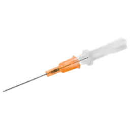

☰
ACM Wiki
ACM Wiki
Descripción general
Objetos
Funciones de misión
Páginas (últimas 10 actualizadas):
TXA
Torniquete
Kit de toracostomía
Jeringa
Vía aérea quirúrgica
Bolsa de succión de emergencia
Estetoscopio
Férula SAM
Bolsa de suero salino
Pulsioxímetro
14g IV
14g IV

Objeto
Tipo
Catéter IV
Categoría
Tratamiento avanzado
Acceso de acción

Brazos
Piernas
Usos
Un solo uso
Peso
0.02kg | 0.05lb
Técnico
Nombre de clase
ACM_IV_14g